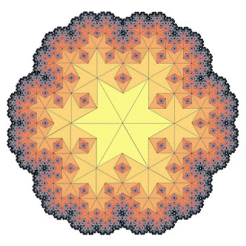
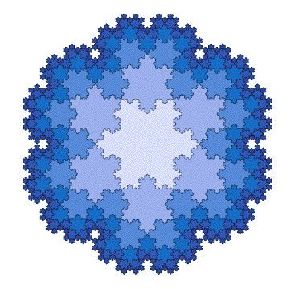

More Fractal Tilings
Here are two examples from Robert Fathauer's extensive catalog of fractal tilings.


For more examples, see
http:// members.cox.net/fractalenc/encyclopedia.html
Return to
fractal tilings
.